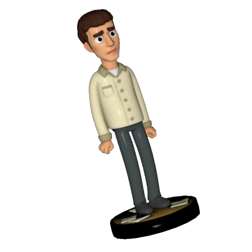
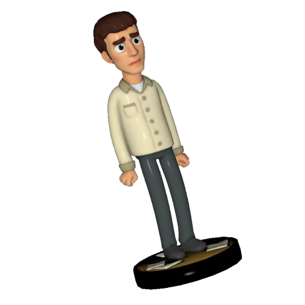

Metáforas, insanidade, contradições, reflexões e paradoxos. Todo esse mix forma um jogo criado em 2013 por Crows, Crows, Crows chamado The Stanley Parable.
Escolha seguir as regras. Veja o impacto das suas ações. Ria, arrependa-se e aproveite o momento.
Essa página foi criada com carinho focando principalmente na sequência: The Stanley Parable Ultra Deluxe. Essa sequência tem a finalidade de honrar o passado, porém adicionando novos conteúdos, novas possibilidades e novas emoções. Foi lançada em 2022, no dia 27 de abril (4/27 no calendário em inglês) após os fãs esperarem um longo tempo.
A página também foi construída com o propósito de apresentar informações básicas sobre o jogo, sendo assim as informações mais profundas opcionais para o leitor. Portanto, quando tiver algo que é um spoiler, haverá avisos.